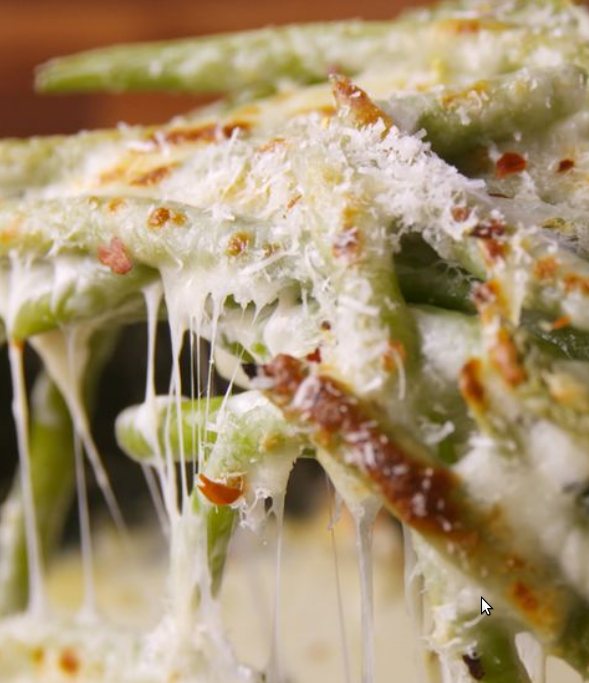

Cheesy Baked Green Beans

Description
A family favorite thanksgiving dish that basically only requires opeing
a bag of green beans dumping on cheese then putting in the oven.
Comes
out of the oven tasting like it took three hours of prep! Perfect for the slacker
cook this holiday season!
Yields: 4 servings
Ingredients
- 2 lb. green beans, cleaned with ends removed
- 1/2 c. heavy cream
- 2 garlic cloves, thinly sliced
- 2 tsp. lemon zest
- 1 c. mozzarella
- 2/3 c. freshly grated Parmesan, plus more for garnish
- pinch of salt
Steps:
- Preheat oven to 400°. Place green beans into a shallow baking dish or skillet.
Pour cream over beans and scatter garlic and lemon zest. Season with salt and red pepper flakes
- Sprinkle with mozzarella and Parmesan and bake until beans are tender and cheese is melted, 25-30 minutes.
If desired, broil until cheese is browned. Garnish with more parm and serve.
Home